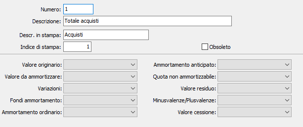

Totalizzatori cespiti
La tabella consente la creazione e la manutenzione dei totalizzatori dei cespiti, ovvero dei “totali” progressivi che contengono la situazione sintetica, ripartita appunto fra i vari totalizzatori, di ciascun cespite e di ciascuna categoria dei cespiti. I totalizzatori qui inseriti vengono visualizzati nei programmi di configurazione causali cespiti e nelle anagrafiche cespiti.

NUMERO: codice numerico per individuare il totalizzatore in esame. Sul campo sono attive le funzioni di ricerca (F9) sulla tabella stessa.
DESCRIZIONE: campo alfanumerico di 50 caratteri per descrivere il totalizzatore in esame.
DESCRIZIONE IN STAMPA: campo alfanumerico di 15 caratteri per definire la descrizione sintetica del totalizzatore in esame che verrà utilizzata come etichetta nelle varie maschere video della procedura cespiti.
INDICE IN STAMPA: campo numerico per indicare la posizione che la descrizione in stampa del totalizzatore in esame dovrà assumere nelle varie maschere video e stampe della procedura.
VALORI: 10 combo box corrispondenti alla colonne del libro cespiti, per definire l’azione che il totalizzatore in esame dovrà esercitare in stampa del libro cespiti.